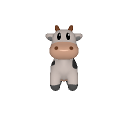
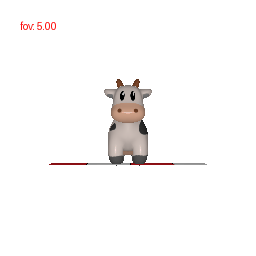
Vertices: 4, Faces: 4
Vertices: 8, Faces: 12
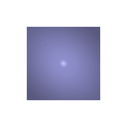
Color 1: Magenta [1.0, 0.0, 1], Color 2: Yellow [1.0, 1.0, 0.0]
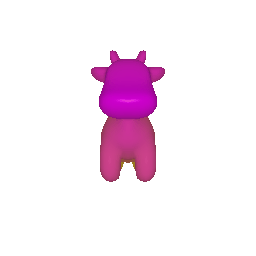
View 1: R = [[0, 1, 0], [-1, 0, 0], [0, 0, 1]], T = [0, 0 ,0]
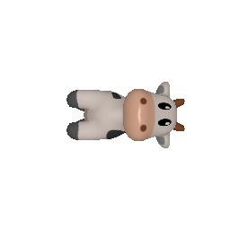
View 2: R = [[1, 0, 0], [0, 1, 0], [0, 0, 1]], T = [0, 0 ,2]
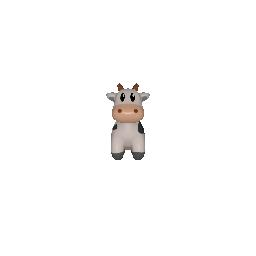
View 3: R = [[1, 0, 0], [0, 1, 0], [0, 0, 1]], T = [0.5, -0.5 , 0]
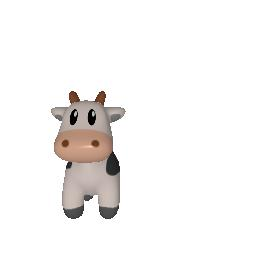
View 4: R = [[0, 0, 1], [0, 1, 0], [-1, 0, 0]], T = [-3, 0 ,3]
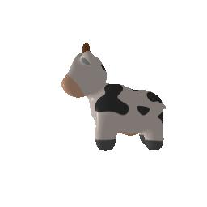
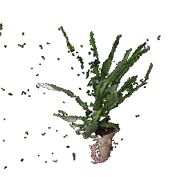 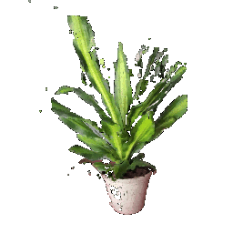 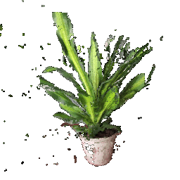
Torus
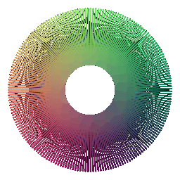
New object: Klein bottle
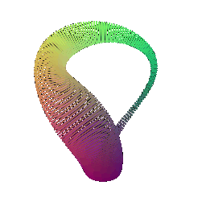
Torus
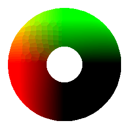
Rendering a mesh vs a point cloud:
Rendering speed: rendering a mesh is faster because mesh representation is more compact, especially when representing a face, where as point cloud needs dense points to represent a face.
Rendering quality: mesh representation provides better rendering quality. The suface is smoother when compared to pointcloud.
Ease of use: mesh representation requires preprocessing to construct the faces and vertices, whereas point cloud is easier to use.
Memory usage: mesh takes less memory due to structured geometry, whereas pointcloud stores individual position and feature (e.g. color) will takes up larger memory.
New object: hyperbolic paraboloid (a saddle)
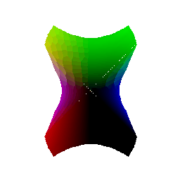
Retexturing a RPG mesh with it's UV Map
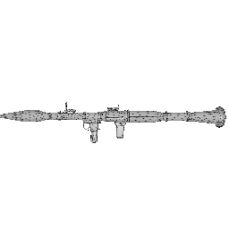
num_samples = 10
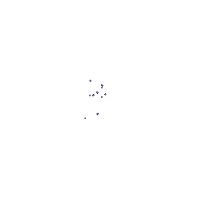 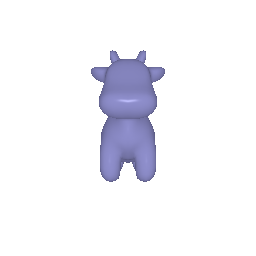
num_samples = 100
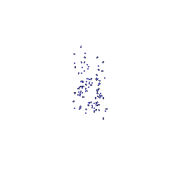
num_samples = 1000
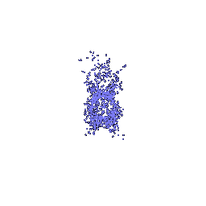
num_samples = 10000
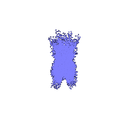